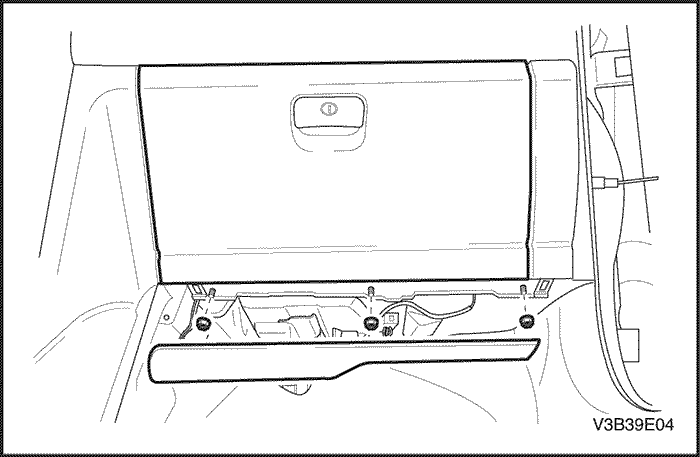
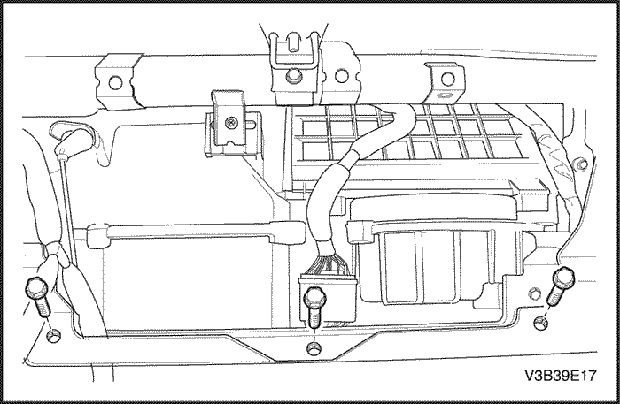
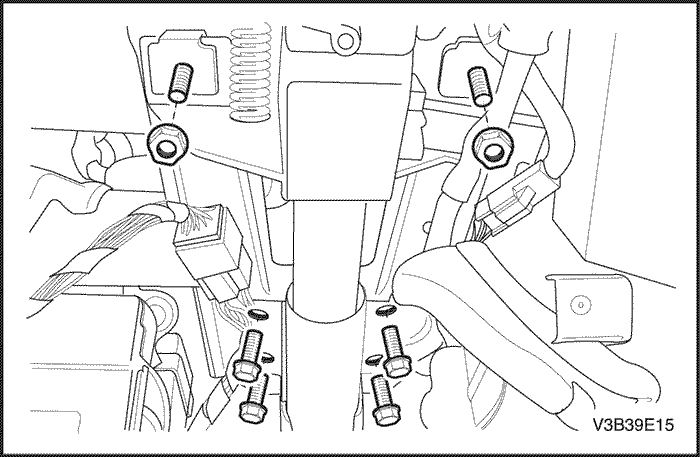

SECCIÓN
MANTENIMIENTO Y REPARACIÓN
servicio con vehículo en marcha


Conjunto del encendedor de cigarrillos
Procedimiento de desmontaje
- Desconecte el cable negativo de la batería.
- Desmonte el conjunto del encendedor.
- Desenchufe los conectores eléctricos.
procedimiento de montaje
- Enchufe los conectores eléctricos.
- Monte el conjunto del encendedor.
- Conecte el cable negativo de la batería.

Marco y panel de acabado del cuadro de instrumentos
(Indicado para conducción a izquierdas, conducción a derechas similar)
Procedimiento de desmontaje
- Desconecte el cable negativo de la batería.
- Desmonte la moldura central.

- Quite los tornillos y desmonte el panel de acabado del cuadro de instrumentos.
- Desenchufe los conectores eléctricos.

- Quite los tornillos y desmonte el marco central.

- Desmonte la guantera y el alojamiento. Consulte el apartado "Guantera y alojamiento" de esta sección.
- Quite los tornillos y desmonte el marco del lado del pasajero.

- Desmonte el marco del lado del conductor.
procedimiento de montaje
- Monte el marco del lado del conductor.
- Monte el marco del lado del pasajero con sus tornillos.
- Monte la guantera y el alojamiento. Consulte el apartado "Guantera y alojamiento" de esta sección.
- Monte el marco central con sus tornillos.
- Enchufe los conectores eléctricos.
- Monte el panel de acabado del cuadro de instrumentos con sus tornillos.
Apretar
Apriete los tornillos del panel de acabado del cuadro de instrumentos hasta 2,5 N•m (22 lb-pulg.).
- Monte la moldura central.
- Monte la moldura central.
- Conecte el cable negativo de la batería.

Difusores de aire del tablero de instrumentos
(Indicado para conducción a izquierdas, conducción a derechas similar)
Procedimiento de desmontaje
- Desconecte el cable negativo de la batería.
- Desmonte el panel de acabado del cuadro de instrumentos. Consulte el apartado "Marco y panel de acabado del cuadro de instrumentos" de esta sección.
- Quite los tornillos y retire las toberas de ventilación del panel de instrumentos.
Montaje
- Monte las toberas de ventilación del panel de instrumentos con sus tornillos.
Apretar
Apriete los tornillos de las toberas de ventilación del panel de instrumentos hasta 2 N•m (18 lb-pulg.).
- Monte el panel de acabado del cuadro de instrumentos. Consulte el apartado "Marco y panel de acabado del cuadro de instrumentos" de esta sección.
- Conecte el cable negativo de la batería.

Guantera y alojamiento
(Indicado para conducción a izquierdas, conducción a derechas similar)
Procedimiento de desmontaje
- Desconecte el cable negativo de la batería.
- Desmonte la tapa del A/A.
- Quite las tuercas que hay en la base de la guantera.
- Abra la guantera y desmóntela.

- Quite los tornillos y desmonte el alojamiento de la guantera.
- Desenchufe los conectores eléctricos.
procedimiento de montaje
- Enchufe los conectores eléctricos.
- Monte el alojamiento de la guantera con sus tornillos.
- Coloque la guantera en el panel de instrumentos.
- Monte la guantera con las tuercas.
- Monte la tapa del A/A.
- Conecte el cable negativo de la batería.
Reloj digital
(Indicado para conducción a izquierdas, conducción a derechas similar)
Procedimiento de desmontaje
- Desconecte el cable negativo de la batería.
- Desmonte el panel de acabado del cuadro de instrumentos. Consulte el apartado "Marco y panel de acabado del cuadro de instrumentos" de esta sección.
- Quite los tornillos y desmonte el reloj digital.
procedimiento de montaje
- Monte el reloj digital con sus tornillos.
Apretar
Apriete los tornillos del reloj digital hasta 2 N•m (18 lb-pulg.).
- Monte el panel de acabado del cuadro de instrumentos. Consulte el apartado "Marco y panel de acabado del cuadro de instrumentos" de esta sección.
- Conecte el cable negativo de la batería.

Grupo de instrumentos
Procedimiento de desmontaje
- Desconecte el cable negativo de la batería.
- Desmonte el panel de acabado del cuadro de instrumentos. Consulte el apartado "Marco y panel de acabado del cuadro de instrumentos" de esta sección.
- Quite los tornillos y desmonte el cuadro de instrumentos.
- Desenchufe los conectores eléctricos.
procedimiento de montaje
Aviso: El conjunto del cuadro de instrumentos no tiene elementos que se puedan reparar. Los LED se usan para iluminar. Si no funciona algún LED, debe sustituirse el conjunto del cuadro de instrumentos.
- Enchufe los conectores eléctricos.
- Monte el cuadro de instrumentos con sus tornillos.
Apretar
Apriete los tornillos del cuadro de instrumentos hasta 2 N•m (18 lb-pulg.).
- Monte el panel de acabado del cuadro de instrumentos. Consulte el apartado "Marco y panel de acabado del cuadro de instrumentos" de esta sección.
- Conecte el cable negativo de la batería.

Atenuador de grupo de instrumentos/Interruptor de nivelación de faros
(Indicado para conducción a izquierdas, conducción a derechas similar)
Procedimiento de desmontaje
- Desconecte el cable negativo de la batería.
- Desmonte el marco del lado del conductor del cuadro de instrumentos. Consulte el apartado "Marco y panel de acabado del cuadro de instrumentos" de esta sección.
- Desmonte el conjunto del potenciómetro de reglaje de faros/regulación de intensidad de la luz del cuadro de instrumentos.
- Desenchufe los conectores eléctricos.
procedimiento de montaje
- Enchufe los conectores eléctricos.
- Monte el conjunto del potenciómetro de reglaje de faros/regulación de intensidad de la luz del cuadro de instrumentos.
- Monte el marco del lado del conductor del cuadro de instrumentos. Consulte el apartado "Marco y panel de acabado del cuadro de instrumentos" de esta sección.
- Conecte el cable negativo de la batería.

Centro de información para el conductor
(Indicado para conducción a izquierdas, conducción a derechas similar)
Procedimiento de desmontaje
- Desconecte el cable negativo de la batería.
- Desmonte el panel de acabado del cuadro de instrumentos. Consulte el apartado "Marco y panel de acabado del cuadro de instrumentos" de esta sección.
- Quite los tornillos y desmonte el centro de información para el conductor.
- Desenchufe los conectores eléctricos.
procedimiento de montaje
- Enchufe los conectores eléctricos.
- Monte el centro de información para el conductor con sus tornillos.
Apretar
Apriete los tornillos del centro de información para el conductor hasta 2,2 N•m (19 lb-pulg.).
- Monte el panel de acabado del cuadro de instrumentos. Consulte el
- Conecte el cable negativo de la batería.

Tablero de instrumentos
(Indicado para conducción a izquierdas, conducción a derechas similar)
Procedimiento de desmontaje
- Desconecte el cable negativo de la batería.
- Desmonte la consola del piso. Consulte la Sección 9G, Guarnecido interior.
- Desmonte el sensor solar. Consulte la Sección 7D, Sistema de calefacción, ventilación y aire acondicionado con control automático de temperatura.
- Desmonte el marco y el panel de acabado del cuadro de instrumentos. Consulte el apartado "Marco y panel de acabado del cuadro de instrumentos" de esta sección.
- Desmonte el cuadro de instrumentos. Consulte el apartado "Cuadro de instrumentos" de esta sección.
- Desmonte la caja de depósito y el DIC. Consulte el apartado "Centro de información para el conductor" en esta sección.
- Desmonte los altavoces de agudos y el radiocasete estéreo AM/FM. Consulte la Sección 9F, Equipo de sonido.
- Desmonte el conjunto de controles automáticos de temperatura. Consulte la Sección 7D, Sistema de calefacción, ventilación y aire acondicionado con control automático de temperatura.
- Desmonte los paneles de defensa. Consulte la Sección 9G, Guarnecido interior.
- Desmonte la guantera y el alojamiento. Consulte el apartado "Guantera y alojamiento" de esta sección.
- Desmonte el apoyo de la rodilla. Consulte la Sección 9G, Guarnecido interior.
- Monte los paneles de guarnecido del montante A. Consulte la Sección 9G, Guarnecido interior.

- Quite los tornillos y retire las tapas laterales del panel de instrumentos.
- Quite los tornillos y retire las tapas laterales del panel de instrumentos.
- Desmonte el conjunto del potenciómetro de reglaje de faros/regulación de intensidad de la luz del cuadro de instrumentos. Consulte el apartado "Potenciómetro de reglaje de faros/regulación de intensidad de la luz del cuadro de instrumentos" de esta sección.
- Desmonte el conjunto del potenciómetro de reglaje de faros/regulación de intensidad de la luz del cuadro de instrumentos. Consulte el apartado "Potenciómetro de reglaje de faros/regulación de intensidad de la luz del cuadro de instrumentos" de esta sección.
- Desenchufe los conectores eléctricos.
- Desenchufe los conectores eléctricos.
- Quite el tornillo que sujeta el bloque de fusibles del panel de instrumentos.
- Quite el tornillo que sujeta el bloque de fusibles del panel de instrumentos.

- Quite los tornillos y desmonte el conjunto de ventilación exterior del lado del pasajero.
- Quite los tornillos y desmonte el conjunto de ventilación exterior del lado del pasajero.
- Desenchufe los conectores eléctricos.

- Quite las tuercas y los tornillos que sujetan la columna de la dirección. Consulte la Sección 6E, Volante y columna de dirección.
- Quite las tuercas y los tornillos que sujetan la columna de la dirección. Consulte la Sección 6E, Volante y columna de dirección.
- Desenchufe el conector eléctrico de la columna de la dirección.
- Baje la columna de la dirección.

- Quite los tornillos y tuercas laterales del panel de instrumentos de debajo del parabrisas.
- Quite los tornillos y tuercas laterales del panel de instrumentos de debajo del parabrisas.
- Quite los tornillos que sujetan el módulo del airbag del pasajero (si el vehículo dispone del mismo). Consulte la Sección 8B, Sujeciones suplementarias inflables.
- Quite los tornillos que sujetan el módulo del airbag del pasajero (si el vehículo dispone del mismo). Consulte la Sección 8B, Sujeciones suplementarias inflables.
- Quite los tornillos del panel de instrumentos.
- Quite los tornillos del panel de instrumentos.
- Desmonte el panel de instrumentos.
procedimiento de montaje
- Coloque el panel de instrumentos en el vehículo.
Aviso: Metales distintos en contacto directo pueden corroerse rápidamente. Asegúrese de utilizar los elementos de sujeción correctos para evitar una corrosión prematura.
- Monte el panel de instrumentos con sus tornillos.
- Monte el panel de instrumentos con sus tornillos.
Apretar
Apriete los tornillos del panel de instrumentos hasta 10 N•m (86 lb-pulg.).
- Coloque los tornillos que sujetan el módulo del airbag del pasajero (si el vehículo dispone del mismo). Consulte la Sección 8B, Sujeciones suplementarias inflables.
- Coloque los tornillos que sujetan el módulo del airbag del pasajero (si el vehículo dispone del mismo). Consulte la Sección 8B, Sujeciones suplementarias inflables.
Aviso: Monte el panel de instrumentos con sus tornillos y tuercas laterales debajo del parabrisas.
- Metales distintos en contacto directo pueden corroerse rápidamente. Asegúrese de utilizar los elementos de sujeción correctos para evitar una corrosión prematura.
Apretar
Apriete las tuercas panel del instrumentos hasta 10 N•m (86 lb-pulg.).
Apriete los tornillos del panel de instrumentos hasta 10 N•m (86 lb-pulg.).

- Levante la columna de la dirección.
- Levante la columna de la dirección.
- Enchufe el conector eléctrico de la columna de la dirección.
- Enchufe el conector eléctrico de la columna de la dirección.
- Coloque las tuercas y los tornillos que sujetan la columna de la dirección. Consulte la Sección 6E, Volante y columna de dirección.
- Coloque las tuercas y los tornillos que sujetan la columna de la dirección. Consulte la Sección 6E, Volante y columna de dirección.
- Enchufe los conectores eléctricos.
- Monte el conjunto de ventilación exterior del lado del pasajero con sus tornillos.
Apretar
Apriete los tornillos del conjunto de ventilación exterior del lado del pasajero hasta 3 N•m (27 lb-pulg.).
- Coloque el tornillo que sujeta el bloque de fusibles del panel de instrumentos.
- Coloque el tornillo que sujeta el bloque de fusibles del panel de instrumentos.
Apretar
Apriete los tornillos del bloque de fusibles del panel de instrumentos hasta 2,5 N•m (22 lb-pulg.).
- Enchufe los conectores eléctricos.
- Monte el conjunto del potenciómetro de reglaje de faros/regulación de intensidad de la luz del cuadro de instrumentos. Consulte el apartado "Potenciómetro de reglaje de faros/regulación de intensidad de la luz del cuadro de instrumentos" de esta sección.
- Monte las tapas laterales del panel de instrumentos con sus tornillos.
Apretar
Apriete los tornillos de la tapa lateral del panel de instrumentos hasta 2,5 N•m (22 lb-pulg.).
- Monte los paneles de guarnecido del montante A. Consulte la Sección 9G, Guarnecido interior.
- Monte los apoyos de la rodilla. Consulte la Sección 9G, Guarnecido interior.
- Monte los apoyos de la rodilla. Consulte la Sección 9G, Guarnecido interior.
- Monte la guantera y el alojamiento. Consulte el apartado "Guantera y alojamiento" de esta sección.
- Monte los paneles de defensa. Consulte la Sección 9G, Guarnecido interior.
- Monte el sensor solar y el conjunto de controles automáticos de temperatura. Consulte la Sección 7D, Sistema de calefacción, ventilación y aire acondicionado con control automático de temperatura.
- Monte los altavoces de agudos y el radiocasete estéreo AM/FM. Consulte la Sección 9F, Equipo de sonido.
- Monte la caja de depósito y el DIC. Consulte el apartado "Centro de información para el conductor" en esta sección.
- Monte el cuadro de instrumentos. Consulte el apartado "Cuadro de instrumentos" de esta sección.
- Monte el panel de acabado del cuadro de instrumentos. Consulte el apartado "Marco y panel de acabado del cuadro de instrumentos" de esta sección.
- Monte la consola del piso. Consulte la Sección 9G, Guarnecido interior.
- Conecte el cable negativo de la batería.
- Conecte el cable negativo de la batería.
DESCRIPCIÓN GENERAL Y FUNCIONAMIENTO DEL SISTEMA
Encendedor
El encendedor de cigarrillos está situado en la parte delantera de la consola del piso. Para utilizar el encendedor, empújelo completamente hacia dentro. Cuando el encendedor esté caliente, se liberará por sí mismo del contacto con el elemento calefactor. El encendedor y el elemento calefactor pueden sufrir daños si no se permite que el encendedor se libere por sí mismo del contacto con el elemento calefactor.
Cenicero
El cenicero está situado en la consola. Para acceder al cenicero, tire de él hacia fuera de su alojamiento. Este cenicero incorpora una lámpara que se enciende al conectar las luces de estacionamiento o los faros.
Difusores de aire del tablero de instrumentos
Las toberas de ventilación central y laterales del panel de instrumentos pueden regularse hacia arriba y hacia abajo y en sentido lateral. Asimismo, las toberas laterales pueden orientarse hacia las ventanillas para desempañarlas.
Guantera
La guantera puede abrirse tirando hacia arriba del tirador. Para acceder al módulo del airbag del acompañante (si el vehículo va provisto del mismo), es necesario desmontar la guantera.
Reloj digital
El reloj digital está situado en el panel de instrumentos, encima de la radio. El reloj puede visualizar la hora en el sistema de 12 o de 24 horas.
Grupo de instrumentos
El cuadro de instrumentos está situado encima de la columna de la dirección y dentro del panel de acabado de este cuadro. El cuadro contiene los instrumentos que le proporcionan al conductor información sobre el comportamiento del vehículo. Este cuadro de instrumentos contiene un velocímetro, un tacómetro, un cuentakilómetros (u odómetro), un indicador de temperatura, un aforador de combustible y varios LED.
El conjunto del cuadro de instrumentos no tiene elementos que se puedan reparar salvo su tapa. Si no funciona algún componente, debe sustituirse el conjunto del cuadro de instrumentos.
Velocímetro
El velocímetro mide la velocidad del vehículo en km/h o mph (con km/h). Consta de un indicador situado en el cuadro de instrumentos que va conectado al sensor de velocidad del vehículo y que se encuentra en el eje secundario de la caja de cambios.
Cuentakilómetros parcial
El cuentakilómetros parcial mide la distancia que ha recorrido el vehículo desde la última vez que se puso a cero. Consta de un indicador, situado en el cuadro de instrumentos, conectado al transmisor del eje secundario de la caja de cambios. El cuentakilómetros parcial puede ponerse a cero en cualquier momento, de forma que el conductor pueda registrar la distancia recorrida desde cualquier punto de partida.
Calibrador de combustible
El aforador de combustible consiste en un indicador, situado en el cuadro de instrumentos, conectado a un transmisor en el depósito de combustible.
El aforador de combustible indicará la cantidad de combustible que hay en el depósito sólo cuando la llave de contacto esté en la posición ON o ACC. Cuando se gira la llave de contacto a las posiciones LOCK o START, la aguja puede volver a cero desde cualquier posición.
Calibrador de temperatura
El indicador de temperatura consta de un indicador, situado en el cuadro de instrumentos, conectado al sensor de temperatura que se encuentra en contacto con el refrigerante que circula por el motor.
El indicador de temperatura señala la temperatura del refrigerante. Una conducción o un ralentí prolongados en un tiempo caluroso pueden hacer que la aguja se desplace más allá del centro del indicador. El motor tendrá un calentamiento excesivo si la aguja entra en la zona roja de la parte superior del indicador.
Luces indicadoras del grupo de instrumentos
El cuadro de instrumentos contiene luces indicadoras que indican el funcionamiento de determinados sistemas o la presencia de problemas potenciales que pueden afectar al rendimiento del vehículo. Los LED se usan para iluminar. Las luces indicadoras no pueden reemplazarse. Si no funciona algún LED, debe sustituirse el conjunto del cuadro de instrumentos.
Tacómetro
El tacómetro mide la velocidad del motor en términos de miles de revoluciones por minuto. Consta de un indicador, situado en el cuadro de instrumentos, conectado a un transmisor situado en el módulo de control electrónico del motor.
No deje que el motor funcione estando el indicador en la zona roja, o el motor puede sufrir daños.
Módulo de sonido de aviso
El zumbador está situado en la unidad de conmutación inteligente (ISU). El zumbador emitirá una señal acústica para llamar la atención en una o varias de las situaciones siguientes:
- Cuando la llave de contacto está puesta en la posición OFF y la puerta del conductor está abierta.
- Cuando hay una entrada de señal del avisador acústico procedente del SDM.
- Cuando la velocidad del vehículo sobrepasa los 120 km/h (si dispone de esta función).
Se suministrará tensión en todo momento a través del bloque de fusibles para alimentar el zumbador.
Centro de información para el conductor
En el centro del panel de instrumentos se ha instalado un Centro de información para el conductor (DIC). El DIC muestra las funciones del sistema de ventilación y calefacción y del ordenador de viaje. El DIC no tiene elementos que se puedan reparar. Si algún componente no funciona, hay que sustituir el módulo.